Изучение возможности дистанционного нарушения работоспособности электронных устройств
1. План работы
1.1. Разработка и изготовление несложных
электронных устройств для использования в качестве подопытных объектов.
1.2. Проведение испытаний имеющихся генераторов магнитных, электрических и
электромагнитных полей на подопытных объектах.
1.3. Разработка устройств для контроля параметров воздействующих полей.
2. Сведения о конструкции интегральных микросхем
В имеющихся в настоящее время электронных устройствах используются, как правило, интегральные микросхемы.
2.1. В основной массе разрабатываемых и
изготавливаемых микросхем размеры элементов составляют ненамного менее 1 мкм –
порядка 0.25 … 0.5 мкм.
2.2. Технологический процесс, как правило, металл – оксид – полупроводник (МОП).
2.3. Основные применяемые материалы – кремний (изредка – арсенид галлия),
алюминий (изредка – медь).
2.4. Количество слоев металлизации, как правило, порядка пяти. Толщина слоев
кремния порядка 1 мкм. Ширина алюминиевых дорожек порядка 1 мкм, толщина порядка
1 мкм. В каждом слое металлизации слой металла (алюминия) стараются сделать
максимальным по площади.
2.5. При разработке топологии микросхемы избегают создания замкнутых петлевых
токопроводящих контуров.
2.6. На входных
цепях используется защита от статического электричества – либо защитные диоды,
либо защитные схемы. Защита может выдерживать напряжения порядка 100 вольт.
2.7. В соответствии с размерами и параметрами элементов собственные резонансные
частоты имеющихся контуров могут составлять сотни МГц - десятки ГГц.
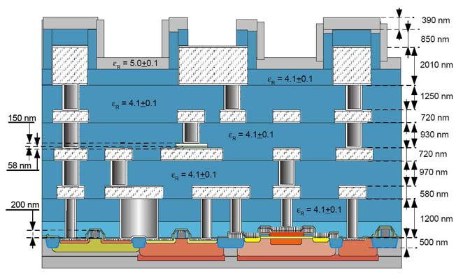
Ниже представлены фотографии кристаллов некоторых микросхем.
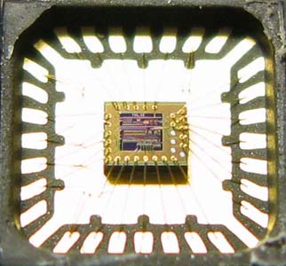 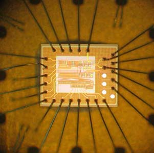 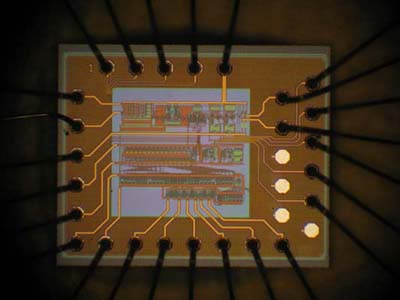 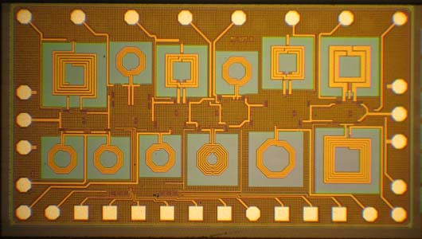
Наиболее перспективным способом деструкции микросхемы представляется электрический пробой оксидного слоя в МОП-структурах посредством генерации достаточной разности потенциалов в электронных цепях, расположенных внутри кристалла.
3. Схемы и конструкции подопытных объектов
3.1. Низкочастотный генератор на КМОП-микросхеме с автономным питанием и светодиодной индикацией работоспособности.
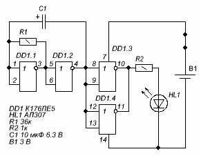
Рис. 3.1.1. Схема электрическая принципиальная НЧ-генератора на КМОП-микросхеме.
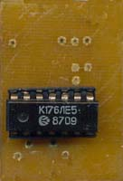
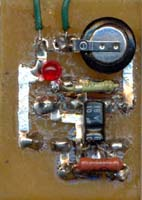
Рис. 3.1.2. Печатная плата НЧ-генератора на КМОП-микросхеме. Размер платы 35 х 25 мм2.
Генератор выдает световые импульсы частотой примерно 1 Гц. Микросхема установлена на лицевой стороне печатной платы в панели. Токопроводящие проводники и элементы схемы размещены на обратной стороне печатной платы. Это обеспечивает удобство проведения экспериментов и возможность оперативной замены микросхемы в случае ее порчи. Собственный источник питания (аккумуляторная батарея) размещен на плате. Генератор может работать в процессе испытаний в автономном режиме или с подключением к внешнему источнику питания с одновременной подзарядкой аккумуляторной батареи.
4. Испытания различных источников импульсного и непрерывного сигнала
4.1. Емкостной накопитель энергии с импульсным соленоидом
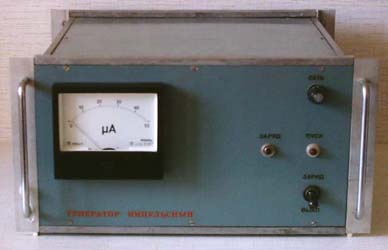
Рис. 4.1.1. Емкостной накопитель энергии [5].
Параметры емкостного накопителя: максимальная запасаемая энергия примерно 1 кДж, максимальное выходное напряжение 500 В.
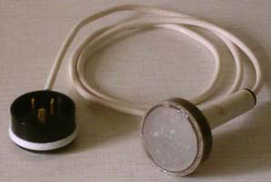
Рис. 4.1.2. Импульсный соленоид [4].
Параметры генерируемого импульсным
соленоидом поля при работе с представленным выше емкостным накопителем:
Амплитуда магнитной индукции вблизи рабочей поверхности соленоида (на расстоянии
2 мм от центра) 2.6 Тл. Длительность магнитного импульса примерно 7 мс. Контроль
производился с помощью импульсного тесламетра с датчиком Холла
[1].
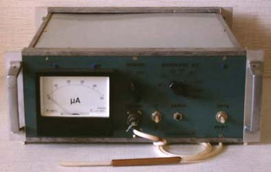
Рис. 4.1.3. Импульсный тесламетр.
Амплитуда электрической напряженности вблизи рабочей поверхности соленоида (на расстоянии 2 мм от центра) 35 В/м. Длительность электрического импульса примерно 2 мс. Измерение электрической напряженности производилось с помощью измерительной катушки и осциллографа.
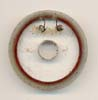
Рис. 4.1.4. Измерительная катушка (диаметр каркаса 25 мм, высота каркаса 5 мм).
Измерительная катушка представляет собой каркас из немагнитного токонепроводящего материала (оргстекло), на который намотан медный провод диаметром примерно 0.12 мм и длиной 1 м.
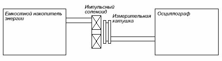
Рис. 4.1.5. Схема измерения напряженности электрического поля.
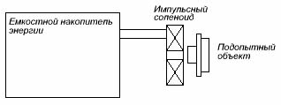
Рис. 4.1.6. Схема испытаний.
При проведении испытаний корпус микросхемы подопытного объекта вплотную прижимался к рабочей поверхности соленоида. В соленоид подавался импульс тока от емкостного накопителя энергии. Работоспособность подопытного объекта нарушить не удалось.
4.2. Высоковольтный источник постоянного напряжения
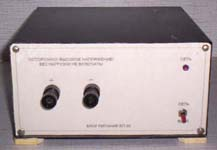
Рис. 4.2.1. Высоковольтный источник постоянного напряжения [3].
Параметры высоковольтного источника постоянного напряжения: максимальное выходное напряжение до 10 кВ (в режиме искрового разряда 6 … 7 кВ), максимальный непрерывный ток короткого замыкания 2.5 мА. Измерение выходного напряжение производилось с помощью киловольтметра с диапазонами 10 и 20 кВ [2].
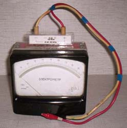
Рис. 4.2.2. Киловольтметр постоянного напряжения (диапазоны 10 и 20 кВ, внутреннее сопротивление 100 и 200 МОм).
Для увеличения выходной мощности в импульсном режиме разряда применялся дополнительный высоковольтный конденсатор собственной конструкции, для зарядки которого использовался вышеуказанный высоковольтный источник питания.
4.2.1. Высоковольтный конденсатор
Расчетная формула для емкости конденсатора: C = (e0eS)/d, где S - площадь обкладки, d - толщина изолирующей прокладки, e - относительная диэлектрическая проницаемость материала прокладки, e0 ≈ 8.85 ∙ 10-12 Ф/м - электрическая постоянная.
Электрические свойства диэлектрических материалов [10]:|
Наименование |
Удельное
сопротивление r,
|
Относительная диэлектрическая проницаемость e |
Тангенс угла потерь tg d |
Электрическая прочность EПР, |
|
Полиэтилен |
1015 |
2.2 … 2.3 |
(2 … 6) ∙ 10-4 при 106 Гц |
25 … 60 |
|
Полипропилен |
1014 … 1015 |
2.2 |
(2 … 5) ∙ 10-4 при 106 Гц |
25 … 40 |
|
Полистирол |
1014 … 1015 |
2.4 … 2.6 |
(2 … 8) ∙ 10-4 при 106 Гц |
20 … 25 |
|
Политетрафторэтилен (фторопласт-4) |
1015 … 1018 (до 150 0C) |
1.9 … 2.2 |
≤1 ∙ 10-4 (до 1010 Гц) |
25 … 27 |
|
Политрифторхлорэтилен (фторопласт-3) |
1016 |
3.0 |
1.5 ∙ 10-2 при 50 Гц |
25 … 27 |
|
Поливинилхлоридный пластикат изоляционный |
1010 … 1012 |
4.0 … 8.0 |
(5 … 8) ∙ 10-2 при 50 Гц |
20 … 50 |
|
Винипласт (жесткая пластмасса на основе поливинилхлорида) |
1012 … 1014 |
4.0 |
0.02 при 50 Гц |
25 … 60 |
|
Полиметилметакрилат (оргстекло, плексиглас) |
1010 … 1011 |
3.6 |
0.06 при 50 Гц |
15 … 25 |
|
Полиэтилентерефталат (лавсан) |
1013 … 1014 |
3.1 … 3.2 |
(2 … 3) ∙ 10-3 при 50 Гц |
140 … 180 (пленка) |
Наиболее доступными материалами для изготовления высоковольтного конденсатора являются алюминиевая фольга в качестве обкладок и полиэтиленовая пленка в качестве межобкладочной изоляции. С учетом изложенного был изготовлен конденсатор с обкладками из алюминиевой фольги толщиной 50 мкм и полиэтиленовой изоляцией толщиной 0.15 мм (рабочее напряжение 6 кВ) емкостью около 0.1 мкФ.
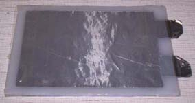
Рис. 4.2.1.1. Высоковольтный конденсатор (емкость 0.1 мкФ, рабочее напряжение 6 кВ, габаритные размеры 240 х 150 х 6 мм3).
Энергия E, запасаемая в конденсаторе емкостью C, заряженного до напряжения U, определяется формулой:
Запасаемая конденсатором емкостью C = 0.1 мкФ при напряжении заряда U = 6000 В энергия E составляет 1.8 Дж.
4.2.2. Искровый разряд над поверхностью микросхемы подопытного объекта
Рис. 4.2.2.1. Конструкция искрового разрядника.
Искровый разрядник представляет собой два отрезка медной проволоки длиной 25 мм каждый, между заостренными концами которых оставлен разрядный промежуток примерно 5 мм. Разрядник смонтирован на плате из фольгированного стеклотекстолита. Напряжение от высоковольтного источника питания с емкостным накопителем подается к контактам с помощью высоковольтных проводов.
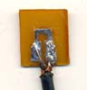
Рис. 4.2.2.2. Конструкция контрольной катушки.
Для контроля напряженности генерируемого электрического поля использовалась одновитковая катушка, изготовленная из фольгированного стеклотекстолита. Выводы катушки припаяны к коаксиальному кабелю, подключаемому к осциллографу. При проведении измерений плата катушки обратной стороной прижималась к обратной стороне платы разрядника через изолирующую прокладку из полиэтилена толщиной около 1 мм.
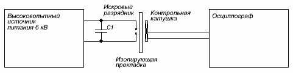
Рис. 4.2.2.3. Схема контроля напряженности электрического поля.
Емкость накопительного конденсатора C1 около 0.1 мкФ, максимальное напряжение заряда примерно 6 кВ. В момент разряда амплитуда напряжения на выводах контрольной катушки составила около 1.5 В. Колебания синусоидальные частотой около 1 МГц с затухающей амплитудой.
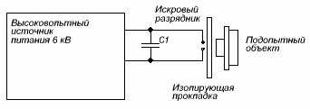
Рис. 4.2.2.4. Схема испытаний.
При проведении испытаний корпус микросхемы подопытного объекта прижимался к обратной стороне платы разрядника через изолирующую прокладку из полиэтилена толщиной около 1 мм. Разряд происходил самопроизвольно при достижении напряжения на обкладках накопительного конденсатора C1 равному напряжению пробоя воздушного промежутка (примерно 6 кВ). Работоспособность подопытного объекта нарушить не удалось.
4.2.3. Разряд конденсатора на катушку индуктивности
Рис. 4.2.3.1. Конструкция катушки с разрядниками.
Катушка представляет из себя 7 витков провода во фторопластовой изоляции, намотанных на каркас из оргстекла. Катушка размещена на печатной плате из фольгированного стеклотекстолита. На этой же плате расположены два воздушных разрядника с зазорами примерно по 3 мм, обеспечивающих самопроизвольный разряд конденсатора на катушку при достижении напряжения на его обкладках, равного суммарному напряжению пробоя воздушных промежутков (примерно 6 кВ).
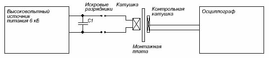
Рис. 4.2.3.2. Схема контроля напряженности электрического поля.
Емкость накопительного конденсатора C1 около 0.1 мкФ, максимальное напряжение заряда примерно 6 кВ. В момент разряда амплитуда напряжения на выводах контрольной катушки составила около 20 В. Колебания синусоидальные частотой около 0.5 МГц с затухающей амплитудой.
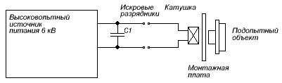
Рис. 4.2.3.3. Схема испытаний.
При проведении испытаний корпус микросхемы подопытного объекта прижимался к обратной стороне монтажной платы в месте, где расположена катушка. Разряд происходил самопроизвольно при достижении напряжения на обкладках накопительного конденсатора C1 равному суммарному напряжению пробоя воздушных промежутков (примерно 6 кВ). Работоспособность подопытного объекта нарушить не удалось.
Напряженность вихревого электрического поля, генерируемого катушкой, на порядок превосходит напряженность поля, генерируемого искровым разрядом при одинаковой энергии накопителя.
4.3. СВЧ-печь
Параметры сигнала: мощность 900 Вт, длительность воздействия 0.5 … 1 минута. При размещении подопытного объекта в СВЧ-печи без поглотителей энергии на его поверхности возникает дуговой разряд. Это не позволяет понять причину повреждения – тепловое воздействие или электрический пробой. Поэтому подопытный объект устанавливался в защитное приспособление, играющее роль поглотителя энергии. Вся конструкция помещалась в СВЧ-печь.
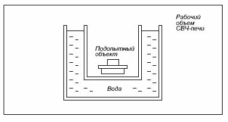
4.3.1. В качестве защитного приспособления использованы два стеклянных сосуда, вставленных один в другой. Между стенками налита вода. Толщина водного слоя примерно 2 см. Во внутренний сосуд помещается подопытный объект. При мощности воздействия 900 Вт и длительности воздействия около 1 минуты вода нагревается почти до кипения, подопытный объект работает нормально.
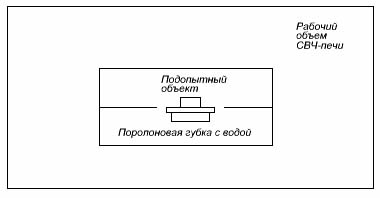
4.3.2. В качестве защитного приспособления использована поролоновая губка, пропитанная водой. При мощности воздействия 900 Вт и времени воздействия около 0.5 минуты сгорела микросхема и светодиод подопытного объекта. Дуговой разряд не наблюдался.
5. Выводы
Для повреждения электронных цепей необходимо наличие электрической составляющей поля (электрической напряженности и наводимой разности потенциалов) достаточной величины. Конструкция генератора поля не играет роли, с энергетической точки зрения более выгодными являются импульсные генераторы электрического, магнитного или электромагнитного поля, создающие в зоне воздействия вихревое электрическое поле с требуемой напряженностью. Можно использовать, в частности, магнитовзрывные генераторы [6 - 9]. Менее экзотическим путем для решения задачи будет применение импульсного генератора высокочастотного электромагнитного поля с направленным излучением. Частота генератора должна находиться в полосе пропускания окружающего электронную схему материала и, желательно, совпадать с резонансными частотами имеющихся в электронной схеме контуров. Воздействующее поле может быть либо в форме одиночного импульса, либо в форме серии импульсов. Так как интегральные микросхемы обладают свойством постепенного накопления дефектов вплоть до полной потери работоспособности, от генератора серии импульсов поля может потребоваться меньшая мгновенная мощность, нежели от генератора одиночных импульсов поля.
Ссылки:
15.01.2010
Альтернативные источники
энергии
Компьютеры и
Интернет
Магнитные поля
Механотронные системы
Перспективные
разработки
Электроника и технология